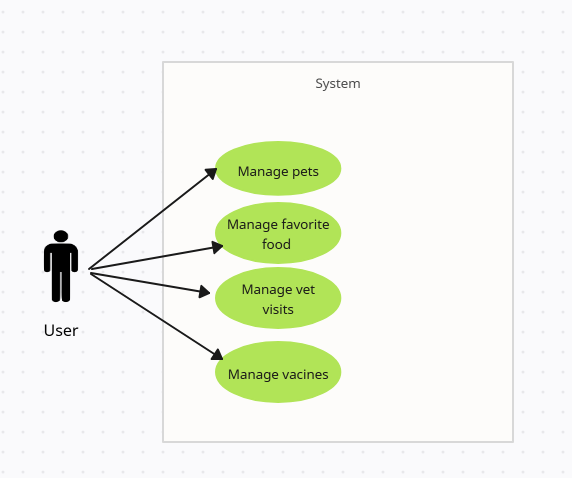

Funkcionalnosti Strežnika
Strežnik za aplikacijo za vodenje domačih živali omogoča naslednje funkcionalnosti:
- Upravljanje uporabnikov: Omogoča registracijo, prijavo in upravljanje profilov uporabnikov.
- Dodajanje in urejanje živali: Uporabniki lahko dodajo svoje hišne ljubljenčke, urejajo njihove
podatke in brišejo stare zapise.
- Prigrizki in prehrana: Strežnik shranjuje informacije o najljubših prigrizkih in časih
hranjenja za vsakega ljubljenčka.
- Veterinarski obiski: Beleženje obiskov pri veterinarju, shranjevanje zgodovine zdravljenja in
opomniki za naslednje obiske.
- Sinhronizacija podatkov: Vsi podatki se shranjujejo v bazo in omogočajo dostop preko več
naprav.
UML Diagram
Spodaj je prikazan UML diagram uporabe strežniških funkcionalnosti:
